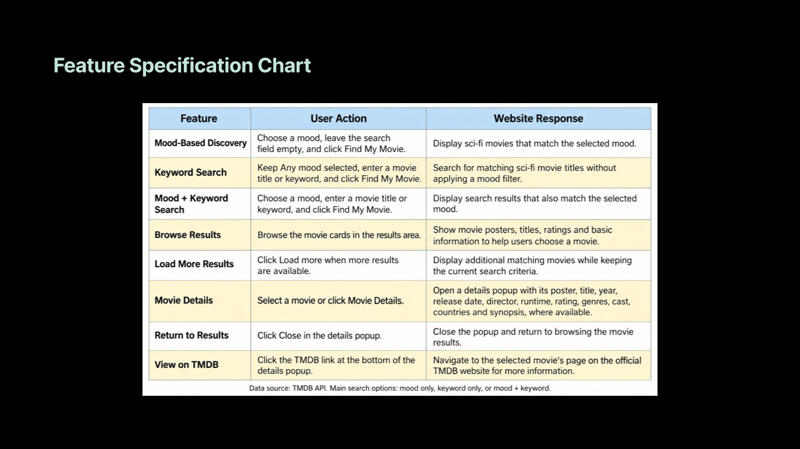
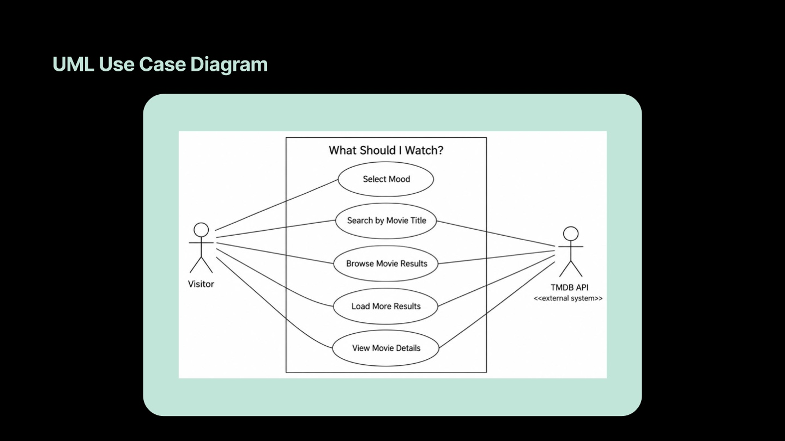
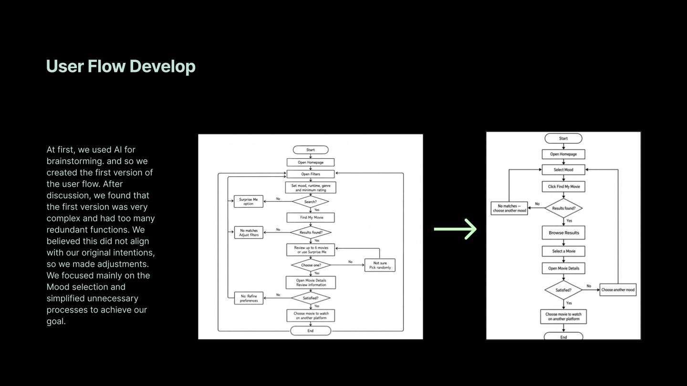
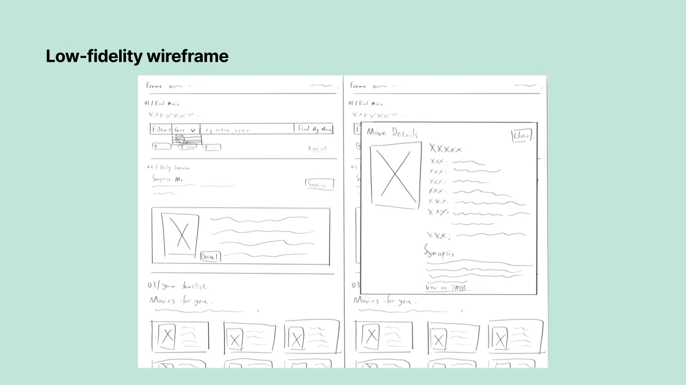
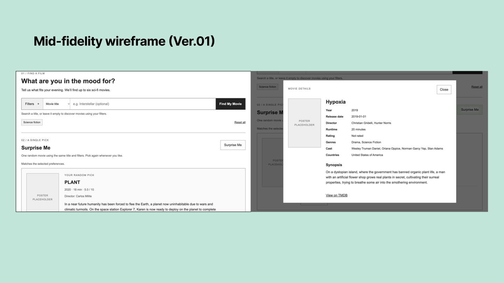
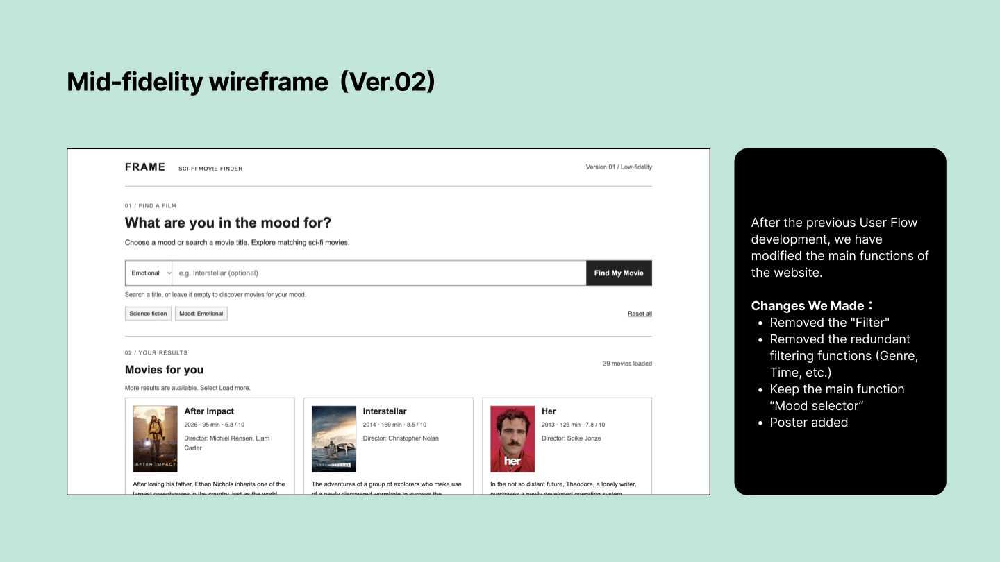
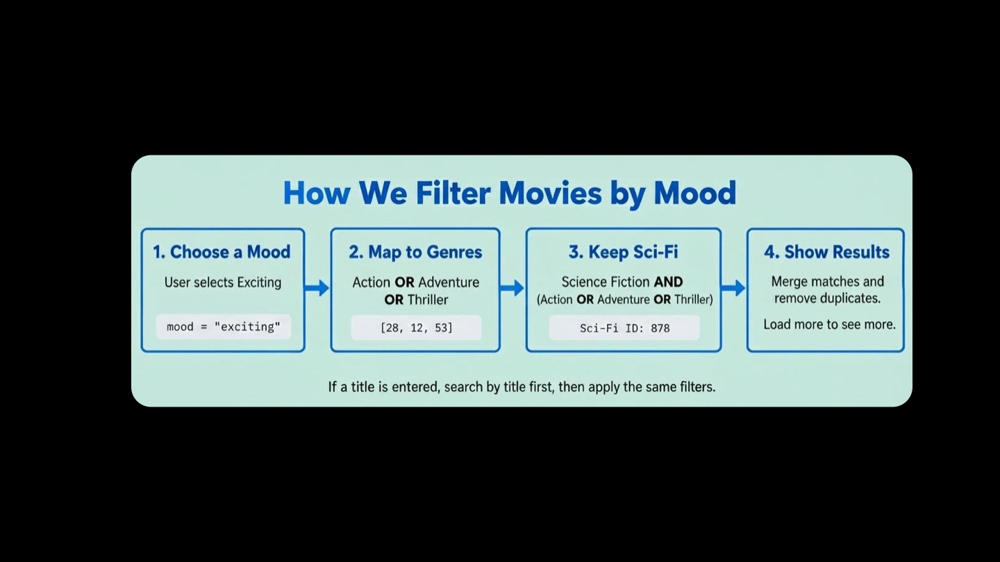

Team project · Interaction design & dynamic data
What Should I Watch?
A sci-fi movie finder that uses six moods and live TMDB data to make choosing a film feel a little easier.
Try the live siteProject brief and team roles
Sci-fi fans can spend more time browsing than deciding. We designed a focused movie finder for people who know how they want a film to feel but may have no title in mind. Visitors can choose a mood, search by title, and browse posters and summaries before deciding.
My role. I defined the site’s features, researched what the TMDB API could provide, designed the visual effects, and wrote the final project report.
Harley’s role. Harley obtained the API key, wrote the code, and deployed the website.
API discovery and feature planning
We first used Bruno to explore the course’s sample Movie API and see how keyword and genre parameters changed the responses. We then chose TMDB for its movie catalog and its support for search, discovery, posters, and movie details. We used Bruno to check how parameters and authentication affected returned data.
The feature specification covered mood selection, optional title search, result cards, movie details, and loading additional results. We mapped those actions and the movie data they depended on before refining the interface.




From a broad flow to mood-first discovery
We used AI to brainstorm a first flow, then reviewed it together. Genre and time filters and a “Surprise Me” option made the journey more complicated than we wanted. We simplified the flow around selecting a mood or entering a title, browsing results, and opening a movie’s details.


Wireframes and iteration
The low-fidelity layout established where search and results would sit. The first mid-fidelity version explored a broader set of controls. The second removed the extra filters, kept the mood selector prominent, and added posters so people could scan results visually.






How the mood matching works
The site offers six moods: exciting, funny, relaxing, scary, emotional, and mysterious. Each mood maps to related genres within science fiction. For example, “Exciting” can match action, adventure, or thriller, while still requiring the movie to be sci-fi. A title search starts with title matches and then applies the relevant filters. Results are merged and deduplicated, with more available on request.


Visual design and motion
I used Eslam Yahya’s “Space Elevator” as a reference for how moving points of light can suggest depth. The final design pairs a moving star field with a near-black background, dark charcoal panels, soft teal accents, off-white body text, and muted secondary labels. The search area and posters remain easy to pick out.
Azonix gives short headings and the wordmark a futuristic look. Avenir Next handles longer text and controls, and monospace type marks small labels and movie metadata.
Development challenge · Movie posters
One challenge was matching each title to its poster. The TMDB response supplies a poster path, so we used the documentation to combine that path with the image base URL and a size such as w342. The resulting URL lets the browser load the corresponding image directly.
Final site and reflection
The published site lets visitors browse by mood, search by title, open movie details, and load more results. AI helped us understand APIs, brainstorm an early flow, and review basic code issues. We made the final decisions about the features and the interaction.
Mood-to-genre matching gives people a place to start, though viewers can experience the same film differently. A next iteration would test the mappings with sci-fi fans and refine the mobile experience.

References
Project references include TMDB’s API documentation, Eslam Yahya’s Space Elevator, Popular Mechanics’ sci-fi movie list, and Curotec’s website development overview. The project report also documents AI-assisted brainstorming and code review.